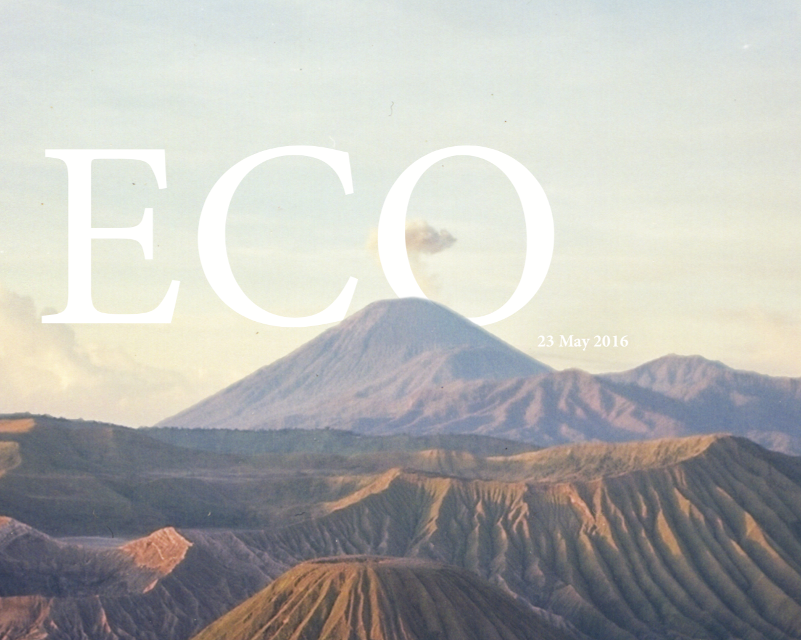
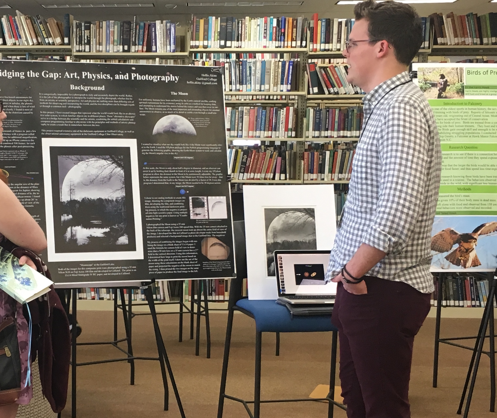
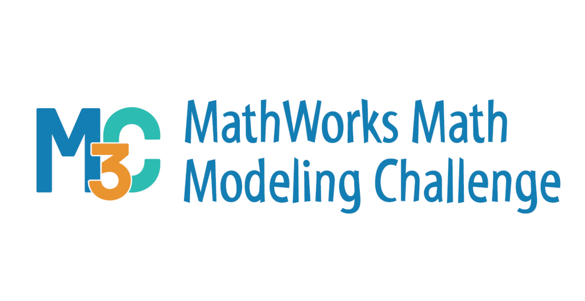

projects // layout
Layout/Design Portfolio

For a final project for a Geographic Information Systems class at Guilford College, I studied urban sprawl
and smart growth solutions. The final paper for that project required tight integration of text and graphics,
and can be found here.
I worked as head photographer for my high school yearbook for several years, and as editor-in-chief my senior year.
During that time I designed two covers for the yearbook in addition to regular layout work.
You can see those covers here and here.

My final project in 10th grade (admittedly a long time ago) was to write and product a magazine issue on sustainability.
I did some writing and all the layout for this project, a PDF of which can be found here.
While it was a long time ago and the content does not the reflect the level of work I am capable of now, I think
this work exhibits the degree to which layout and information design are important and come naturally to me.
Scientific Writing Sample

In the Spring of 2018 I co-wrote with a professor and submitted for publication an article on the Lucky Imaging process for
astrophotography. As first author, the bulk of the writing is my own. Our article was accepted with no edits and published
in the October 2018 issue of The Physics Teacher. You can see the article in PDF form here.
I also presented this project in poster form at the Guilford College Undergraduate Symposium.

In the Spring of 2018, I worked with a team of fellow students at the Early College at Guilford to complete the
SIAM Mathworks Math Modelling Challenge, a 14-hour long math competition. We developed a model to address food waste in the
U.S. and submitted a paper which won Honerable Mention in the competition. The final paper can be seen here.
{kind=link}
{kind=link}